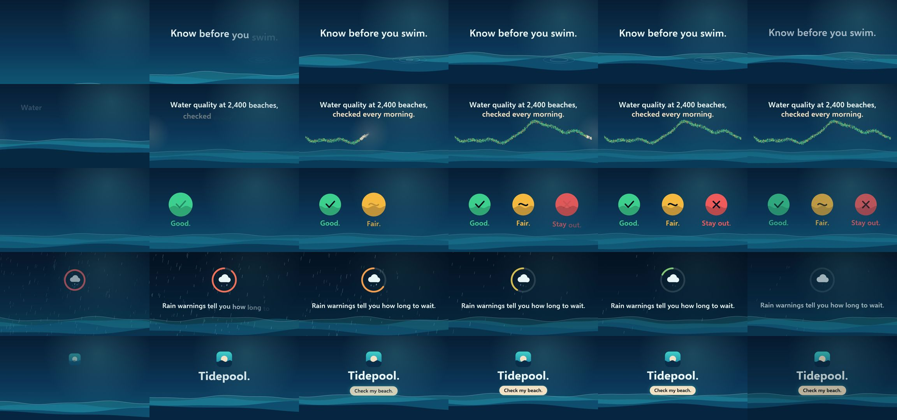

Control: Claude Code with no video skill: test run, 2026-10-11
The same brief for every skill: a 15-second promo for a made-up app, five fixed lines of on-screen copy, 1920 x 1080 at 30 frames per second. Claude Code (Claude Opus 5.5) made it with the skill in a throwaway sandbox with no API keys for video, image or voice models. 4.4 minutes; sound: yes. All results · The brief · How it is checked
The four checks
| Renders to a playable file | pass | H.264 |
|---|---|---|
| Length, size and frame rate as asked | pass | 15.0 s, 1920x1080, 30.0 fps |
| All five lines readable | pass | 5 of 5 |
| The picture moves | pass | 3% of sampled frame pairs held still |
Frames sampled twice a second

How it was made (the session's closing message)
I made the video and checked the final file with ffprobe: it's H.264 at 1920×1080, 30 fps, exactly 15.0 seconds (450 frames), with a synthesised AAC audio track. **What's on screen.** It's all drawn in code on a canvas, with deep-ocean colours and moving layered waves. The five lines of copy appear in order, word by word, and none is shown for less than about 2.6 seconds. Nothing else in the video is text. 1. **0–3 s, "Know before you swim."** The water rises into frame and ripple rings spread out from a swimmer's spot. 2. **3–6.2 s, "Water quality at 2,400 beaches, checked every morning."** This line is split over two lines. A soft morning light sweeps along a coastline of 2,400 dots, and each dot turns green, amber or red as the light reaches it. 3. **6.2–9 s, "Good. Fair. Stay out."** Three coloured badges pop in one after another: a green tick, an amber wave and a red cross. 4. **9–12 s, "Rain warnings tell you how long to wait."** Rain falls and a countdown ring empties, shifting from red to amber to green while the rain eases off. The ring has no numbers on it. 5. **12–15 s, "Tidepool. Check my beach."** A small sun-and-wave app icon, the "Tidepool." wordmark, and "Check my beach." on a button that briefly presses in. Then the picture fades to dark. **Sound.** The music was made in code with Python's standard library: a soft pad of chords, a surf sound, and chimes timed to the scene changes. There's no voice-over. **How it was built.** No extra packages were installed. A small Node script controls the installed Chromium directly to capture each frame, and ffmpeg puts the frames and audio together. Everything is in `~/work/project`: - `scene.js` and `index.html` draw the animation. - `render.mjs` captures the frames into `frames/`, which I kept. - `audio.py` makes the soundtrack. - `build.sh` encodes the final file. To rebuild from scratch, run `python3 audio.py && node render.mjs && ./build.sh` in that folder. DELIVERABLE: ~/work/output/video.mp4